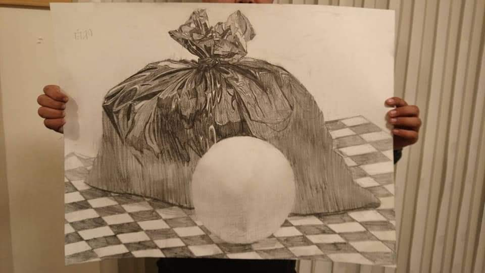

DAIZENメソッドのヒミツ（その1）
DAIZENメソッドのヒミツについてお話しします。『なぜそんなに綺麗になるのですか』とよくご質問を受けます。私どもの用いるDAIZENプロフェッショナルメソッドの一つの特徴は、通常の清掃レベルでは飽き足らず、一種のアート感覚、この様に光ったらもっと美しい、この曲線が輝くと更に綺麗で素敵だ、という飽くなき探求を続けるメソッドであることが特徴です。
このDAIZENプロフェッショナルメソッドを駆使する私どもは、常にアート感覚と表現方法、五感を研ぎ澄ます方法、芸術感覚を高める試行錯誤をもう何年にも渡って修練し、さらなる高みを指しているアートアスリートでもあります。
この普段のトレーニング、そして不断のアート感覚の修練が『綺麗になるクリーニング』に大きく寄与しているのがヒミツの一つなのです。
